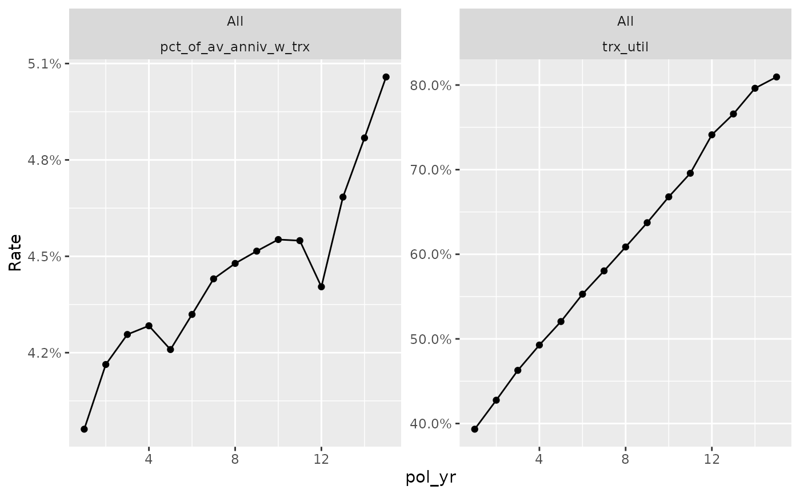

Additional plotting functions for transaction studies
Source:R/plot_special_trx.R
plot_special_trx.RdThese functions create additional experience study plots that are not
available or difficult to produce using the autoplot.trx_df() function.
Arguments
- object
An object of class
trx_dfcreated by the functiontrx_stats().- ...
Additional arguments passed to
autoplot.trx_df().
Details
plot_utilization_rates() - Create a plot of transaction frequency and
severity. Frequency is represented by utilization rates (trx_util).
Severity is represented by transaction amounts as a percentage of one or
more other columns in the data ({*}_w_trx). All severity series begin with
the prefix "pct_of_" and end with the suffix "_w_trx". The suffix refers to
the fact that the denominator only includes records with non-zero
transactions. Severity series are based on column names passed to the
percent_of argument in trx_stats(). If no "percentage of" columns exist
in object, this function will only plot utilization rates.
Examples
study_py <- expose_py(census_dat, "2019-12-31",
target_status = "Surrender") |>
add_transactions(withdrawals) |>
left_join(account_vals, by = c("pol_num", "pol_date_yr"))
trx_res <- study_py |> group_by(pol_yr) |>
trx_stats(percent_of = "av_anniv", combine_trx = TRUE)
plot_utilization_rates(trx_res)
